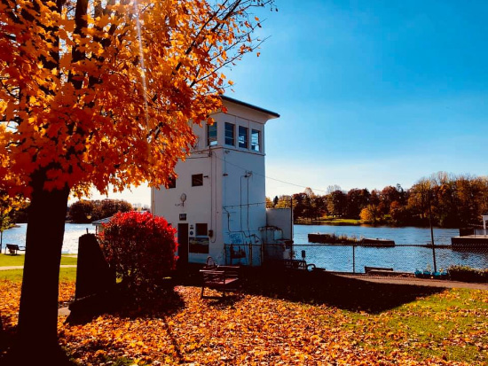

<!--Meta--> 
<meta charset = 'UTF-8'> 
<meta name="viewport" content="width=device-width, initial-scale=1.0">
<title> Jena Klimaszewski</title>

<!--Header Style-->
<style>
  body {
    font-family: 'Inter', sans-serif;
    background-color: #f4f4f9;
    margin: 0;
    padding: 0;
  }

  header {
    background-color: #ab91b8;
    padding: 2em 1em;
    color: white;
    text-align: center;
    border-radius: 0 0 12px 12px;
    box-shadow: 0 4px 10px rgba(0,0,0,0.1);
  }

  header h1 {
    margin: 0;
    font-size: 2.5em;
    font-weight: 600;
  }

  nav {
    margin-top: 1em;
  }

  nav a {
    color: white;
    text-decoration: none;
    margin: 0 12px;
    font-weight: 600;
    font-size: 1.05em;
    padding: 6px 10px;
    border-radius: 6px;
    transition: background-color 0.3s ease, color 0.3s ease;
  }

  nav a:hover {
    background-color: rgba(255, 255, 255, 0.2);
    color: #fff;
  }
</style>

<!--Header-->
<header>
  <h1>Jena Klimaszewski</h1>
  <nav>
    <a href="index.html">Home</a>
    <a href="GISPortfolio.html">GIS Portfolio</a>
    <a href="writingsamples.html">Writing Samples</a>
  </nav>
</header> 

<!--About Me-->
</style>
<link href="https://fonts.googleapis.com/css2?family=Inter:wght@400;600&display=swap" rel="stylesheet">
<section style="max-width: 850px; margin: 2em auto; padding: 2em; background-color: #fef6f9; border-radius: 12px; box-shadow: 0 4px 10px rgba(0,0,0,0.08); font-family: 'Inter', sans-serif;">
  <h2 style="margin-top: 0; font-size: 1.8em; color: #b0355b;">About Me</h2>
  <p style="line-height: 1.6; font-size: 1.05em;">
    My name is Jena Klimaszewski. I was born in Upstate New York, and am looking to relocate to the area after graduating this May. I am from Phoenix, NY, a small 
    canalside town in Oswego County. Growing up, I enjoyed the community building that took place in my town, and that experience sparked my interest in community planning. 
  </p>

  <p style="line-height: 1.6; font-size: 1.05em;">
    I completed my Bachelor’s degree at Clark University in Worcester, Massachusetts in May of 2024. My undergraduate majors were Geography and 
    International Development. Throughout my degree, I was able to learn a lot about urban planning theory, as well as effective ways to engage with diverse communities.  
    Currently, I am wrapping up my Master’s degree in Community Development and Planning at Clark. This program built on my existing skills, allowing me to use them at a higher level.
    Both of these programs allowed me to learn different ways of quantitative analysis as well, including GIS.
  </p>

  <p style="line-height: 1.6; font-size: 1.05em;">
    After graduation, I am aspiring to be a community planner and am interested in building upon the existing strengths of towns and cities. I am a strong advocate for effective community
    engagement and participation. My core interests include creating affordable housing options, expanding public transit, and improving walkability.
  </p>

  <div style="display: flex; justify-content: center; flex-wrap: wrap; gap: 2em; margin-top: 2em;">
    
    
  </div>
</section>
